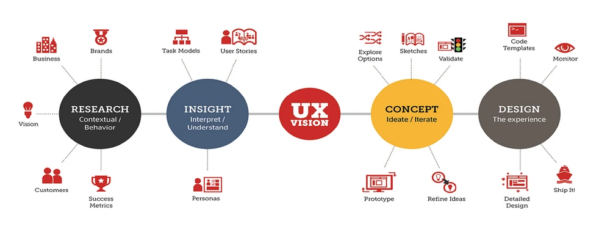

Intro

Kära läsare,
Jag är en kreativ ingenjör med kompetens inom både forsknings- och utvecklingsområdet som verkligen trivs när det händer mycket samtidigt. Om ditt företag växer väldigt snabbt, speciellt inom mina intresseområden, produktdesign och tjänster. Då skulle jag väldigt gärna vilja bidra till företagets framtida utveckling och vara en del av olika team.
Målet med min utbildning vid Uppsala universitet har varit att kunna arbeta med användarupplevelse, beteende och design av produkter och tjänster. Jag söker tjänster med rätt kombination av teknik och innovationsarbete.
Jag skulle verkligen vilja arbeta med team för utveckling som bidrar till människors välbefinnande och hälsa. Jag tror på hårt arbete och uthållighet leder till fantastiska saker. Jag tror att man kan få erfarenhet från vilket jobb som helst och använda det inom olika domäner. Jag tvekar inte att arbeta för vilket företag som helst på vilken nivå som helst, jag tycker att det är intressant och jag trivs verkligen med det. Som person är jag välkomnande, något som jag visat genom fritidsaktiviteter som att ansvara för mottagandet av nya studenter och genom olika jobb inom utbildningsbranschen. Jag är också en kreativ person som gillar att arbeta med olika uppdrag. Att knyta an till människor och upprätthålla kontakter är också något som jag tycker är stimulerande. Jag har alltid dragits till folkorienterade jobb.
På fritiden spelar jag gitarr eller cyklar till utkanten av staden. Jag försöker vara utomhus i naturen så ofta som möjligt och jag älskar discgolf och bouldering. Jag gillar också att spela brädspel och gå på afterwork med kollegor.
Jag ser fram emot att träffa dig för en intervju.
Med vänliga hälsningar,Sameer
Erfarenhet

Ser fram emot att arbeta med användarupplevelse och innovation.
Efter att ha tillbringat 12+ år som konsult inom programmering och innovativa koncept.
Arbetserfarenhet
Senior UX Strategist — Remotion AB | Dec 2024 – Nu, Stockholm
• Utvecklade strategier för att förbättra användarresor genom AI-drivna lösningar som ökade konverteringsgrad och kundnöjdhet.
• Genomförde granskningar för SEO & UX-samverkan, i linje med affärsmål.
• Ledde tvärfunktionella designteam i Figma, med ansvar för mentorskap och budget.
• Integrerade AI-teknologier för personalisering och skalbarhet.
Kunder: PwC, Skansen, Sambla grupp, Nestit grupp.
Senior Projektchef (Design & Sales) — SigmaT Consultancy Pvt Ltd | Sep 2021 – Nu, Uppsala
• Etablerade SigmaT:s IT-tjänster på den europeiska marknaden genom affärsutveckling.
• Levererade skräddarsydda produktstrategier för att möta kundernas behov från start till leverans.
• Ledde tvärfunktionella team för att skapa användarcentrerade, marknadsrelevanta IT-lösningar.
Senior Produktchef (Design) & Lead UI/UX Konsult — Compricer AB (Schibsted Group) | Maj 2022 – Nov 2024, Stockholm
• Utformade och implementerade produktstrategi som ökade intäkterna med 60%.
• Ledde design- och utvecklingsteam som förbättrade användarupplevelsen och konverteringar.
• Genomförde UI-förbättringar i Figma med fokus på användarvänlighet och affärsnytta.
Senior Produktchef (Design) & Lead UI/UX Specialist — Endorse Media AB | Maj 2021 – Sep 2021, Stockholm
• Designade och lanserade en innovativ Web3-plattform för musik-NFTs.
• Mentorerade och ledde ett designteam med fokus på innovation.
• Hanterade hela produktlivscykeln från idé till marknadsintroduktion.
Senior Produktkonsult — Konsult/Egenföretagare | Feb 2018 – Sep 2021, USA & Sverige
• Specialiserad på SaaS, e-handel, industriell teknik och inbyggda system.
• Genomförde användarundersökningar och tester som ökade effektiviteten med upp till 45%.
• Ledde digitala tjänsteprojekt för sjukhus, utbildning och småföretag.
Kunder: Globalen Fair Trade, Pharma Relations, Arbetsförmedlingen och NDA-projekt.
Interaktionsdesigner (Projekt) — SAAB AB | Sep 2019 – Nov 2019, Linköping
• Ansvarade för visuell design och informationsarkitektur i mission-kritiska system.
• Utvecklade low-fidelity koncept och prototyper för träningssystem.
Projektchef (Operations) — Aptech Limited | Okt 2015 – Apr 2016, Mumbai
• Utvecklade modeller för att förbättra kundservice och produktprestanda.
• Genomförde tekniska workshops för lösningsdesign.
• Samarbetade med intressenter för resursplanering och personalutbildning.
Chef – IT, Ops, Design — Advance Carbon and Rotary Components | Jun 2013 – Jun 2014, Mumbai
• Ledde UI-utveckling och förbättrade användarupplevelsen för digitala produkter.
• Genomförde A/B-testning och datadrivna beslut för produktoptimering.
• Effektiviserade processer och reducerade kostnader med över 10% per kvartal.
Vill arbeta för innovation
Fokusera på tillgänglighet, interaktionsdesign, webbanvändbarhet, beteendemönster, kundresor, visuell design, internationella och unga användare.
Genom att förstå designmönster, designprocess, personas, informationsarkitektur.
Med metoder som Agile, Analytics & Metrics, Heuristic Evaluation, Persuasive Design, Prototyping.
För att ge bättre resultat på applikationsdesign, B2B-webbplatser, varumärke, innehållsstrategi, e-handel, användartestning.
Andra intressen inom området E-post, mobil & surfplatta, sökning och navigering, sociala medier, eyetracking, UX-humor, UX-team
Kompetens

Saker jag kan göra
- Analysera
- Design
- Fånga buggar
- Administrera datamängder
- Expertutvärderingar av användare
- Lead Teams and Collaborative Works
- Gör kunder och kollegor glada
Metod
Interviews, Personas, Storyboarding, Journey Maps, Survey Design, Experiment Design, Usability Testing, Rapid Prototyping, Qualitative Analysis, Business Analysis, Quantitative Analysis, Design Strategy, Data Visualization.
Verktyg
• Unity3D, JIRA, Slack, Zeplin, Adobe Creative Suite, Sketch, Figma, Invision, Balsamiq.
• Google Analytics, Tableau, PowerBI, QlikView, A-CAD.
Kodning
• HTML, CSS, JS.
• C, C++, Java.
• SQL, NoSQL, Git
• Språk - Modersmål(engelska, hindi, marathi), Lagom Svenska
• Jag Följ Web Content Accessibility Guidelines(WCAG) 2.2
• Anpassningsbar, kritisk tänkare, dedikerad, pålitlig, designer, flexibel, ärlig, visonär, innovativ och smart arbetskraft.
du kan kolla in min personlighet och logik profilutvärdering från ALVA LABS AB, Sverige och IBM certifering.
Begrepp som lärt sig under magisterprogrammet -
Masteruppsats, Människa-datorinteraktion, Metoder för användbarhetsutvärdering, Vetenskapliga metoder inom människa-datorinteraktion, Avancerad interaktionsdesign, Avancerade visuella gränssnitt, Användarcentrerad systemdesign,
Förkroppsligad interaktion, Icke-exkluderande design och utvärdering, Perception och visuell design.
Diploma masterexamen i HCI.
Begrepp som lärt sig under kandidatprogrammet -
Tillämpad matematik, datorprogrammering, mänsklig maskininteraktion, datastrukturer och algoritmer, databashanteringssystem, nätverk, artificiell intelligens, maskininlärning och mer.
Förutom studier
Camping, vandring, bouldering, klättrande, gitarr, cykling, motor cykling, film / tv-program och matlagning är bland andra intressanta aktiviteter.
Uppnådde också några medaljer inom sport och en professionell kampsportartist (Shito ryu karate do).
Kontakt
Du kan ladda ner en kopia av mina curriculum vitae här
- CV
Du kan e-post mig direkt här
- mail
- e-post
Du kan ringa mig vidare
+46760674925
Mitt Partnerföretag i Indien
Du kan se mitt projekt på git
- Github
Eller kontakta mig på sociala medieplattformar
- Discord
- LinkedIn